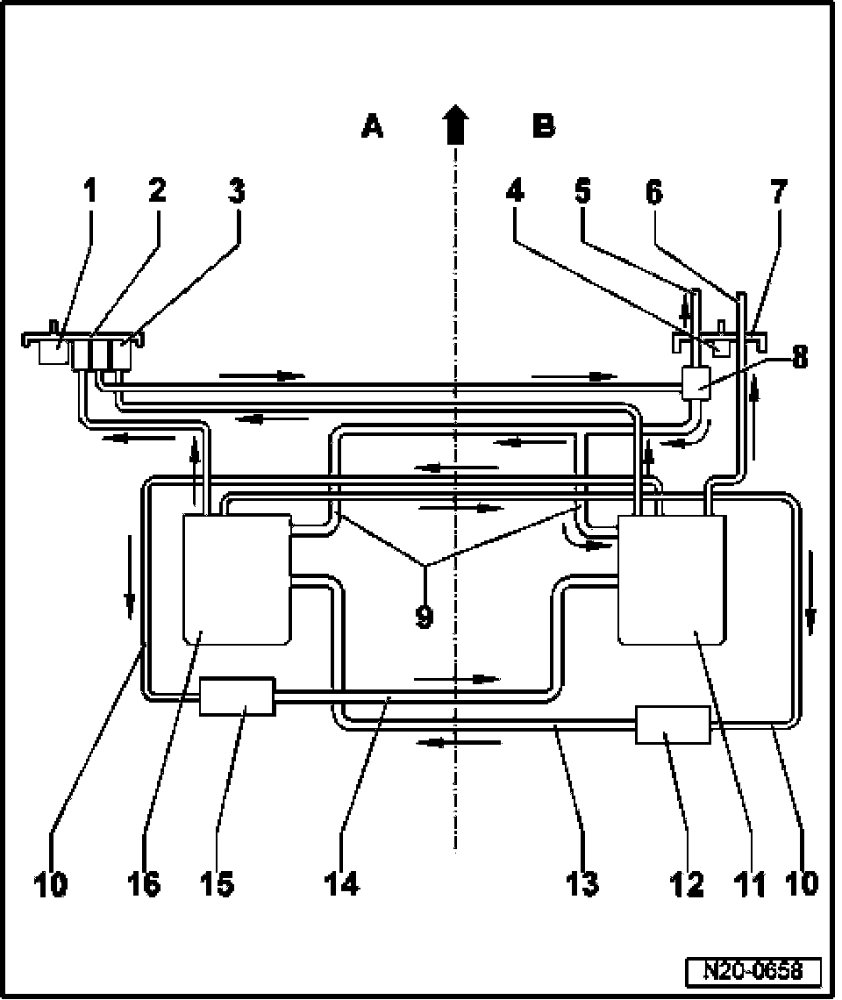

Fuel Tank: Locations
Connection Diagram For Fuel Lines And Fuel Tank Components

A Left side of tank
Arrow shows direction of travel
B Right side of tank
1 Gravity valve
2 Flange
3 Fuel filter
4 Gravity valve
5 Supply line
- To fuel rail
6 Supply line for auxiliary heating
7 Flange
8 Fuel pressure regulator
9 Return line
- From fuel pressure regulator
- To Fuel Pump (FP) unit, left and right side
10 Supply line for suction jet pump
11 Fuel pump (FP) unit
12 Vacuum booster
13 Delivery line
- Black
- To Fuel Pump (FP) unit, left side
14 Delivery line
- Black
- To Fuel Pump (FP) unit, right side
15 Vacuum booster
16 Fuel pump (FP) unit